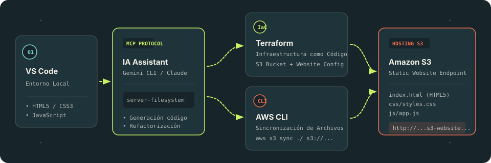

Visual Studio Code
Entorno principal de desarrollo donde se crea y estructura el proyecto (HTML5, CSS modular, JS y manifiestos de Terraform).
PRACTICA DEVOPS 00 • AWS ACADEMY LEARNER LAB
Demostración del ciclo completo de entrega continua y desarrollo asistido por IA: desarrollo en Visual Studio Code mediante Gemini CLI / Claude Code integrado con MCP (Model Context Protocol), aprovisionamiento de infraestructura con Terraform y despliegue automatizado con AWS CLI en Amazon S3.
DISEÑO DE LA SOLUCIÓN

EL RECORRIDO
Entorno principal de desarrollo donde se crea y estructura el proyecto (HTML5, CSS modular, JS y manifiestos de Terraform).
El asistente inteligente interactúa directamente con el workspace a través del servidor MCP de sistema de archivos (@modelcontextprotocol/server-filesystem).
Gestiona la infraestructura en AWS de forma declarativa, idempotente y reproducible: bucket S3 y configuración de website hosting.
AWS CLI sincroniza los archivos hacia el bucket S3, entregando la web a través del endpoint HTTP público o controlado por AWS Academy.
CONCEPTOS FUNDAMENTALES
Herramienta de Infraestructura como Código (IaC) de HashiCorp. Permite definir la infraestructura en ficheros declarativos HCL (main.tf), controlar el estado mediante terraform.tfstate y predecir cambios con terraform plan antes de aplicarlos con terraform apply.
Simple Storage Service es un servicio de almacenamiento de objetos altamente disponible y escalable. Mediante la característica Static Website Hosting, transforma el bucket en un servidor web HTTP para servir directamente index.html, hojas de estilo, scripts y assets multimedia.
MCP es un estándar abierto desarrollado por Anthropic que conecta modelos de lenguaje con herramientas y fuentes de datos locales o remotas. A diferencia de un chatbot aislado, un agente con MCP puede explorar archivos, ejecutar validaciones y operar con seguridad sobre el proyecto.
SEPARACIÓN DE RESPONSABILIDADES
terraform init
terraform validate
terraform plan
terraform apply -auto-approve
terraform state list.\publish.ps1 -BucketName (terraform output -raw bucket_name)ESTADO DEL PROYECTO
Verificando estado del entorno...
Diseñada en VS Code + IA
Publicada en Amazon S3